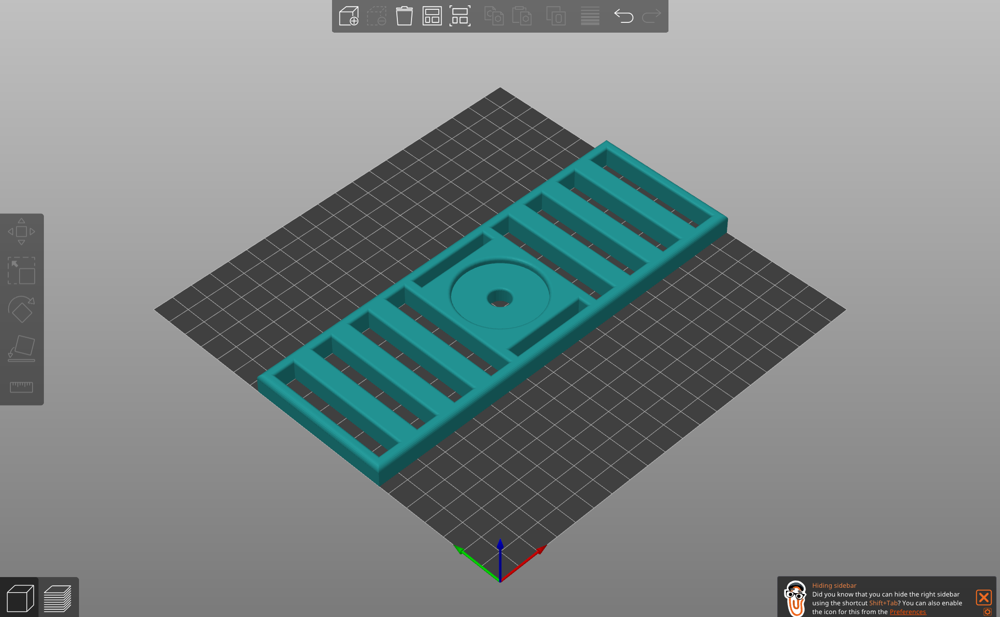
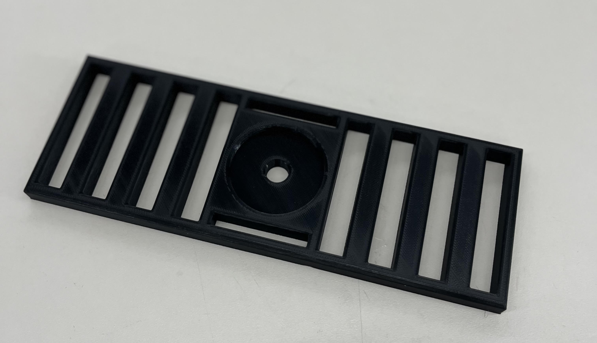

<div class="textcontainer">
<p class="margin"> </p>
<div style="background-color: white; padding: 20px; border-radius: 10px; box-shadow: 0 0 10px rgba(0,0,0,0.1); max-width: 800px;">
<h3>Week 5: 3D Design & Printing</h3>
<h4><strong> Assignment: Model and 3D print something </strong></h4>
For this week, I designed and printed a **bottom ventilation plate** for my Smart Water Dispenser final project. It allows airflow and drainage through spaces in between so that any type of accidnetal spills leaks everywhere/
<div class="row g-3 my-3">
<div class="col-md-4">
<figure>
<img class="img-fluid rounded shadow-sm" src="./RoughDraftBV.png" alt="Rough draft on Fusion">
<figcaption class="small text-muted mt-1">Initial CAD rough draft on fusion.</figcaption>
</figure>
</div>
<div class="col-md-4">
<figure>

<figcaption class="small text-muted mt-1">Prusa Slicer </figcaption>
</figure>
</div>
<div class="col-md-4">
<figure>

<figcaption class="small text-muted mt-1">Printed part.</figcaption>
</figure>
</div>
</div>
### Notes
- The print was overall successful
- Printed for total 7 hours
---
### Files (downloadable)
Use the links below to download my source model, STL, and sliced G-code.
- <a download href="./files/JP-SODADRAINAGE.f3z">Download Fusion 360 Archive (.f3z)</a>
- <a download href="/files/JP-SODADRAINAGE.stl">Download STL (.stl)</a>
- <a download href="/files/JP-SODADRAINAGE.gcode">Download G-code (.gcode)</a>
---
## Final Project: Smart Water Dispenser — Update
### Project Goals
- Reliable/Constant water dispenser
- Spill-safe base with ventilation and drainage (this week's printed plate).
### Bill of Materials (BOM)
<table class="table table-sm table-bordered align-middle">
<thead class="table-light">
<tr>
<th>#</th><th>Item</th><th>Qty</th><th>Source</th><th>Est. Cost</th><th>Notes</th>
</tr>
</thead>
<tbody>
<tr>
<td>1</td><td>ESP32 (Seeeduino XIAO ESP32)</td><td>1</td>
<td><a href="https://www.seeedstudio.com/" target="_blank">Seeed</a></td><td>$0</td><td>Microcontroller</td>
</tr>
<tr>
<td>2</td><td>3V Pump</td><td>1</td>
<td><a href="https://www.adafruit.com/" target="_blank">Adafruit</a></td><td>$0</td><td>Food-safe tubing</td>
</tr>
<tr>
<td>5</td><td> Jumper Wires </td><td>1</td>
<td>Lab stock</td><td>$0</td><td>Pump control</td>
</tr>
<tr>
<td>6</td><td>3D-Printed Vent Plate (this week)</td><td>1</td>
<td>Self-made</td><td>$0</td><td>PLA, 20 g</td>
</tr>
<tr>
<td>5</td><td>750 ML Water </td><td>1</td>
<td>Lab stock</td><td>$2.75 </td><td>Pump control</td>
</tr>
</tbody>
<tfoot>
<tr>
<th colspan="4" class="text-end">Estimated Total</th>
<th>$2.75</th>
<th></th>
</tr>
</tfoot>
</table>
</div>